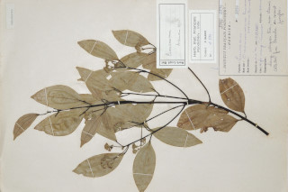
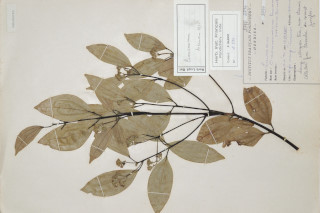

Images :
 


| Habit : | Trees up to 8 m tall. |
| Leaves : | Leaves simple , opposite to subopposite ; petiole 1 cm; lamina 6-11 x 1.5-4 cm, elliptic or subovate-elliptic , apex shortly acuminate with blunt tip, base cuneate to attenuate , margin entire , young leaves sericeous beneath, later glabrous , subcoriaceous ; trinerved , suprabasal , laterals not reaching the leaf apex ; tertiary_nerves horizontally_percurrent ; higher order nerves minutely reticulate . |
| Inflorescence / Flower : | Inflorescence in pseudoterminal and axillary racemes , to 5 cm long, pubescent . |
| Fruit and Seed : | Berry ; seed 1. |